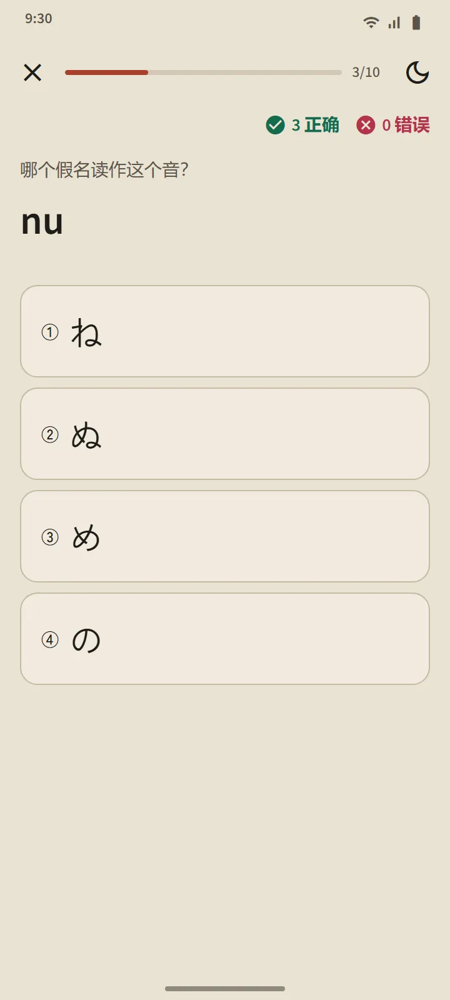

兼作课程列表的字表
“平假名”和“片假名”页面从首页的“日语基础”部分打开。顶部的汇总卡片统计你已认识的字符；下方的字表分为三组：清音（46 个字符）、浊音・半浊音（浊点和半浊点）以及拗音（きゃ、しゅ、ちょ 等）。实心格子表示“已记住”，空心描边的格子表示正在学习。

一行一课
字表的每一行就是一节课：可以点按听发音的字符框、罗马字、已记住标记、每个字符的笔顺，以及“你能读的词”：仅由学到该行为止的字符组成的真实词典单词，罗马字藏在按钮后面，让你先尝试自己读。课程以“测验这一行”按钮收尾。

读音规则
每张字表的最后一组讲解初学者容易栽跟头的规则：平假名中的小写 っ 和长音；片假名中的长音符号 ー、小写 ッ 以及外来语组合（ファ、ティ、ウィ）。每条规则都附有你能读的例词。
十题一组的测验，不重新安排复习
假名测验有三种题型：由字符选罗马字、由罗马字选字符、由发音选字符。一个字符连续答对三次后就成为已记住，答错则退回“学习中”。与单词和汉字不同，字符不会重新安排复习：当你能把它们全部读出来，字表就完成了。测验总结会显示你的得分、新记住的字符和答错的字符。

从这里开始
第一次打开应用时，它会问你是从零开始，还是已经会读平假名。初学者在首页上的第一步是“认识平假名”，接着依次是前 20 个单词、第一节语法课、第一个汉字和第一次模拟考试。